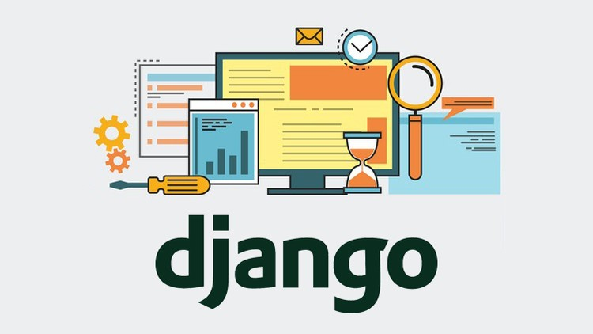
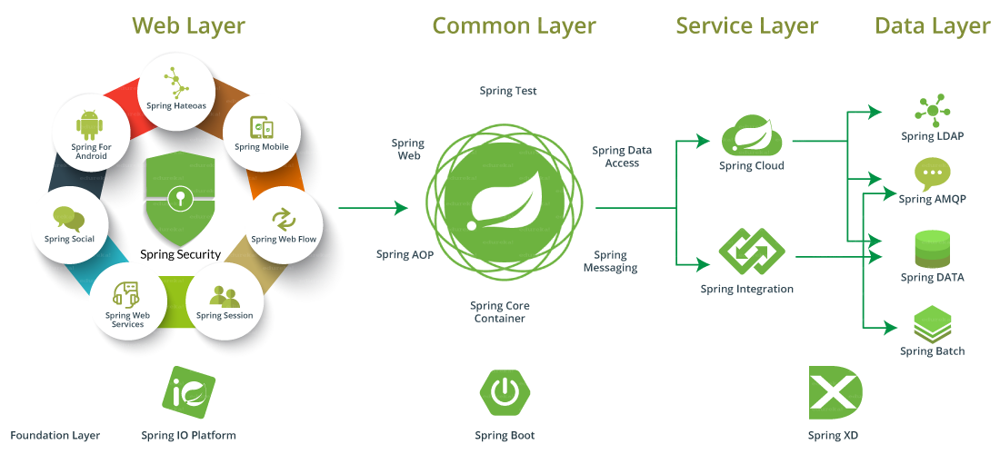
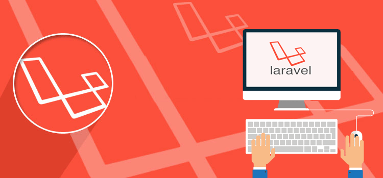

Pavlos Antoniou
Last updated Apr 7, 2019
1.
Django
Python
Django is a Model-View-Template framework that uses Python for web development. It’s used by some of the big names such as Pinterest, Mozilla, and Instagram. Django is a free, open source, high-end framework written in the famously simple, flexible, and relatively easy-to-learn Python programming language. Initially released in 2005, it’s used by thousands of programmers every year, owing to its friendliness to beginners and advanced users alike.
A 'batteries included' approach to programming is a hallmark of both Python and Django, and it makes the framework an excellent choice for any developer who wants to build modern and robust web applications with a minimal amount of code. It’s a highly structured framework – it forces you to do things the Django way, rather than your own way. When building a site that requires a strong and secure foundation that protects transactions and sensitive data, such as an ecommerce site, Django is a great framework to use. It hides your source code by default, and it’s often one of the first frameworks to respond to a new vulnerability. It has a solid user authentication model with the ability to configure different users, and its core team also usually alerts other frameworks of patches they should make to maintain security. This all makes Django a very suitable choice when security is a top priority.
PROS: Rapid development, security, great community, easy to learn (python inside), easy database management.
CONS: Speed, not the right choice for really small sites, like static one-pagers or microservices, monolithic, components deployed together.

2.
Spring
Java
Spring is a Model-View-Controller framework that uses Java, the all-time popular language. It’s used by websites like Wix, TicketMaster, and BillGuard. Spring possess a lot of sister projects that boost its performance and let you scale your business easily. The fact that it uses Java, a strongly typed language, is a serious pro for many web developers. The learning curve might be quite steep though, especially if you don’t know Java.
The Spring Framework is an application framework and inversion of control container for the Java platform. The framework's core features can be used by any Java application, but there are extensions for building web applications on top of the Java EE (Enterprise Edition) platform. Although the framework does not impose any specific programming model, it has become popular in the Java community as an addition to, or even replacement for the Enterprise JavaBeans (EJB) model. The Spring Framework is open source.
PROS: Fast, avoid re-inventing the wheel (many features), modular design, consistent transaction management.
CONS: Complex, long learning curve, heavy use of XML configuration.

3.
Laravel
PHP
Laravel is a Model-View-Controller framework that uses PHP, which is one of the most famous languages of the web.
Laravel is a web application framework with expressive, elegant syntax. Laravel attempts to take the pain out of development by easing common tasks used in the majority of web projects, such as authentication, routing, sessions, and caching.
Laravel comes with API support out of the box and it also possesses a decent amount of packages that could extend its reach. Laracasts is a screencasts tutorials website with over a thousand video on PHP, Laravel and frontend technologies in the Laravel ecosystem that could be considered to be a beginner’s heaven. In terms of performance, however, Laravel doesn’t compare to Django or Express, which might be a drawback for heavy projects.
PROS:Fast application development, easy to understand and use, fast execution, security, very good documentation.
CONS:Slow, small community compared to other PHP frameworks, amateur developers face problems while extending codes and classes.
